|
TIOVX User Guide
|
|
TIOVX User Guide
|
In order to further explain the usage of the tivxReferenceImportHandle and tivxReferenceExportHandle API's, several use cases are provided below. In particular, each of these use cases note when each vx_reference is in a safe state to release. Please also note the legend on the left side of the images to fully understand the separate blocks within the diagrams.
The first use case involves 2 vx_reference 's, one which already has a memory buffer allocated for the vx_reference and one which does not. (Note: please refer to Memory Management in TIOVX for more information on when memory buffer allocation occurs.) These use case diagrams describe how to successfully import the memory buffer from one vx_reference to the next without causing a memory leak.
The below image describes the initial state of this use case, with ref1 pointing to buf1 while ref2 does not yet point to a memory buffer.
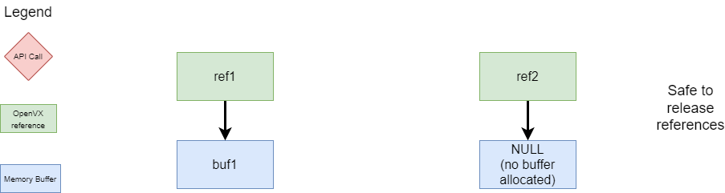
The next step in this use case is to export the buf1 from ref1 first to the application, followed by an import of buf1 to ref2. This sequence is shown in the below diagram. Following this operation, ref2 will be pointing to buf1, while ref1 is also still pointing to buf1. The important point about this portion of the sequence is that neither ref1 nor ref2 should be released at this time, as it will cause the reference that is not released to be pointing to a buffer which has been released.
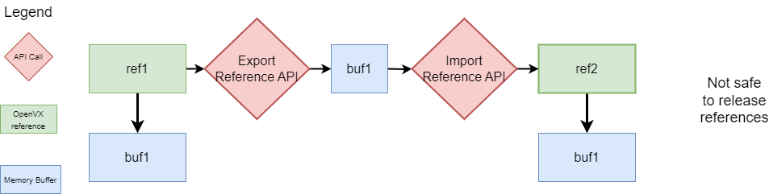
Now that the ref2 is pointing to buf1, the ref1 is no longer needed. The proper way to then release ref1 is to first import a NULL pointer to ref1 to ensure it is no longer pointing to buf1. Once this import is done, the ref2 can be used as required and both ref1 and ref2 are in a state that allows them to be released without a memory leak or invalid memory access.
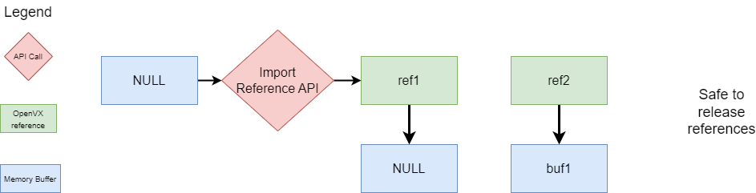
The next use case involves 2 vx_reference 's, which both already have memory buffers allocated for each of the vx_reference 's. (Note: please refer to Memory Management in TIOVX for more information on when memory buffer allocation occurs.) These use case diagrams describe how to successfully import the memory buffer from one vx_reference to the next without causing a memory leak.
The below image describes the initial state of this use case, with ref1 pointing to buf1 and ref2 pointing to buf2.

Since we are ultimately trying to import buf1 to ref2, we first export buf2 from ref2. If instead we were to import another buffer directly to ref2 prior to this step of exporting buf2, the implementation will throw a VX_ZONE_INFO message indicating that we are overriding the buffer. In this case, this buffer will be lost and there will be a memory leak. Therefore, this step is needed to avoid such a scenario.
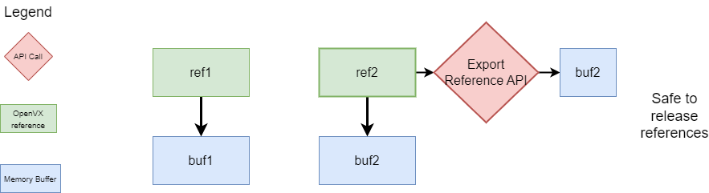
Similar to the previous use case, the next step is to export the buf1 from ref1 first to the application, followed by an import of buf1 to ref2 as shown in the below diagram. And similarly to the use case above, it should be noted that neither ref1 nor ref2 should be released at this time, as it will cause the reference that is not released to be pointing to a buffer which has been released.
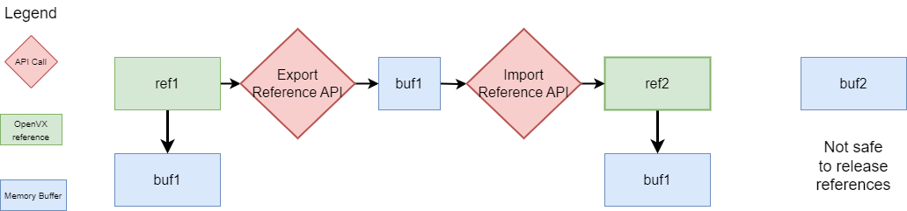
The next step is to free buf2 obtained from the export from ref2 using the tivxMemFree API. This step can optionally be done before the preceding step without issue. However, while ref1 and ref2 are both pointing to buf1, these still cannot be released.
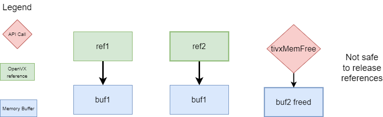
Finally, similarly to use case 1, in order to prepare ref1 for release, a NULL pointer can be imported to ref1. Once this import is done, the ref2 can be used as required and both ref1 and ref2 are in a state that allows them to be released without a memory leak or invalid memory access.
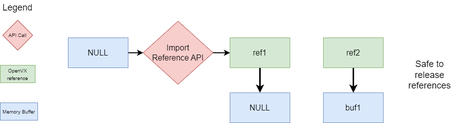
The next use case to consider is the case wherein you want to swap the buffers being pointed to by the references.
The below image describes the initial state of this use case, with ref1 pointing to buf1 and ref2 pointing to buf2.
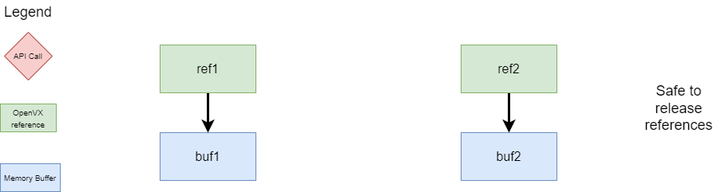
The first step to achieve this swap is to initially export both buf1 from ref1 and buf2 from ref2.
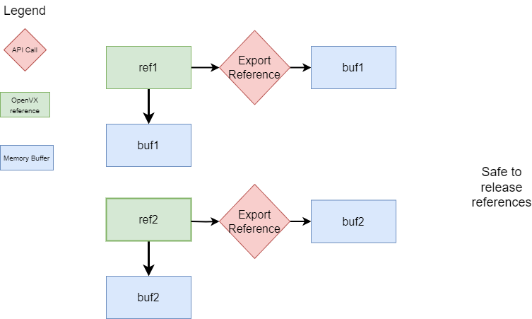
These buffers are now available to be imported to the different references. In the diagram below, buf2 is imported into ref1, overriding buf1's association with ref1. At this point in the call sequence, the references are not in a state which allows them to be released properly.
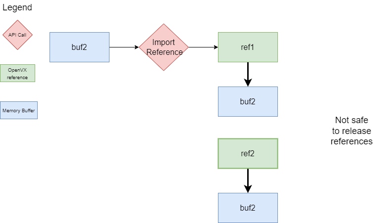
Finally, the buf1 is imported into ref2, completing the swap. Once this import is done, both ref1 and ref2 are in a state that allows them to be released without a memory leak or invalid memory access.
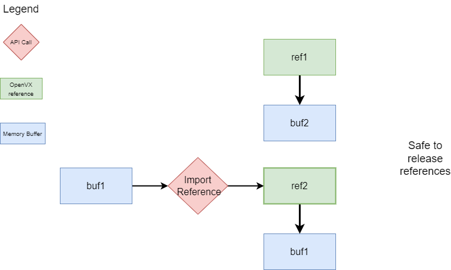
The last use case considered here is the import of memory which has not been allocated via the framework directly via the data object constructors. The memory must still be allocated using the tivxMemAlloc API as per the tivxReferenceImportHandle API documentation.
In the diagram below, the situation is such that a vx_reference has been created with no buffer yet allocated, while a separate buffer has been allocated using the tivxMemAlloc API.
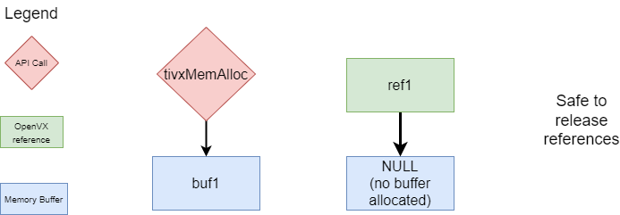
In order to have the ref1 point to this new buf1, the tivxReferenceImportHandle API can be called, creating the desired result of ref1 pointing to buf1. Now when the ref1 is released, the buf1 will also be freed.
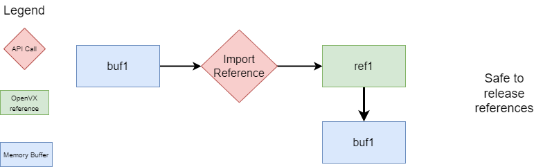
One high level use case of this API is sharing the exported buffers across processes. The below set of diagrams describe how this can be achieved within a multi-process scenario. At a high level, the semantic which must be adhered to in this scenario is that the process which originally allocated the buffer must finally free the buffer.
First, let us consider two processes where we have created 2 OpenVX references where we ultimately want the OpenVX reference in each process to point to the same memory. In the first process, we have ensured the buffer has been allocated, while in the second we have an OpenVX reference pointing to a NULL buffer. (Note: if the reference in P2 has already been allocated, it must first be released similarly to Use Case 2).
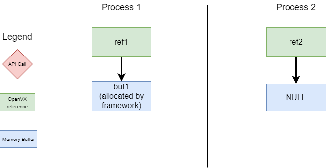
Next, we would like to export the buffer buf1 from ref1 across the process boundary to ref2. (Note: There are utility API's to do aid in this sharing of buffers across process boundaries. Please reference the "File Descriptor Exchange across Processes" application found within the vision apps package of the PSDK RTOS for an example on how to use these.) Internally to these API's, the physical buffer has now been shared across the process boundary and has been mmapped to the process. Depending on the application, there may now need to be further communication across the process boundary, particularly in the case that each of these references are graph parameters of graphs within the separate processes.
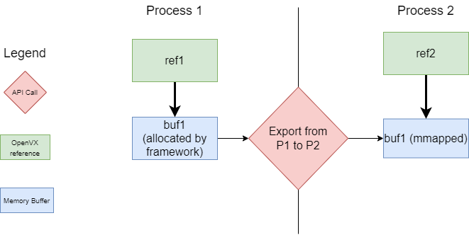
Once the application has completed, the sequence below must be followed for releasing these references. The consumer processs of the buffer (P2) can first release the reference "ref2". This in turn munmaps the buf1 from this process. Note that if this buf1 was shared across multiple references in P2, all but one of those references can have a NULL buffer imported to the reference and subsequently be released.
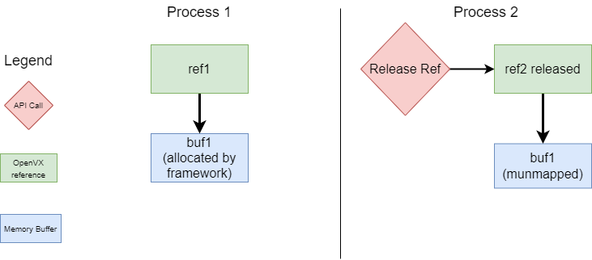
Now that buf1 has been munmapped from P2, the same communication mechanism established from P1 <-> P2 must signal back to P1 that the buffer has been munmapped from P2 and thus is ready to be ultimately freed from P1.
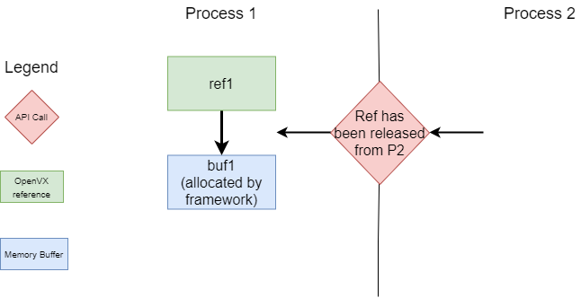
Now that P1 has received the signal from P2 that the buf1 has been munmapped, the buf1 is ready to be released. This can be done by releasing ref1, thereby freeing buf1.
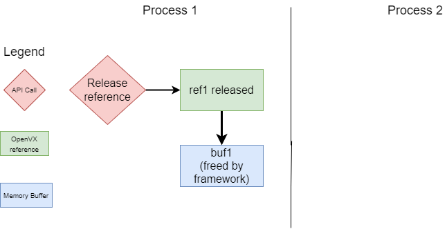
It is important to note that within each process, the buffer handling and releasing adheres to the same semantic as described in the use cases above, namely that the actual release of the memory must be done a single time. For other references which received the imported buffer within the same process, the suggested process for release is that the reference has imported a NULL reference prior to release.
 1.8.14
1.8.14